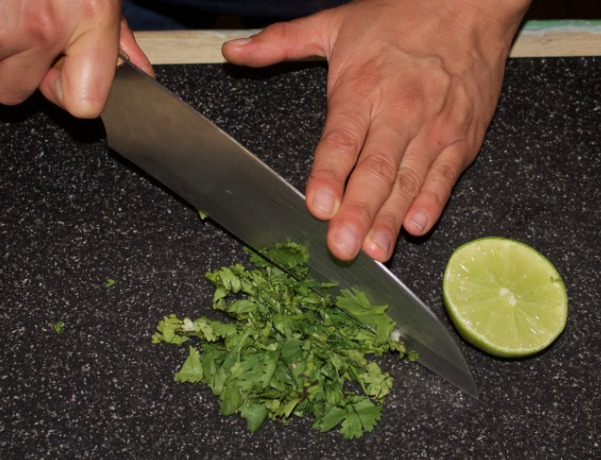
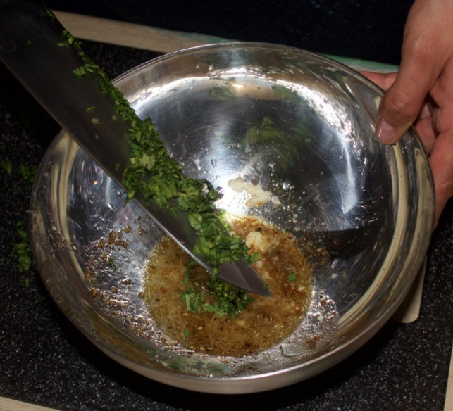
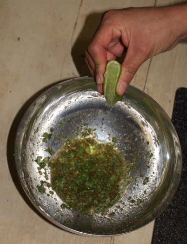
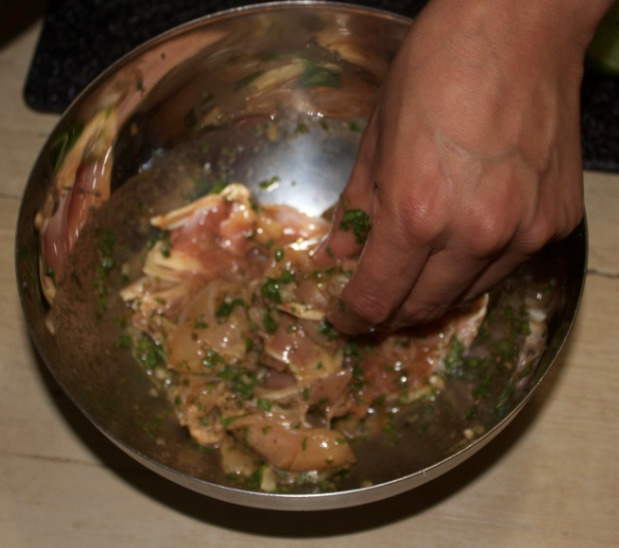
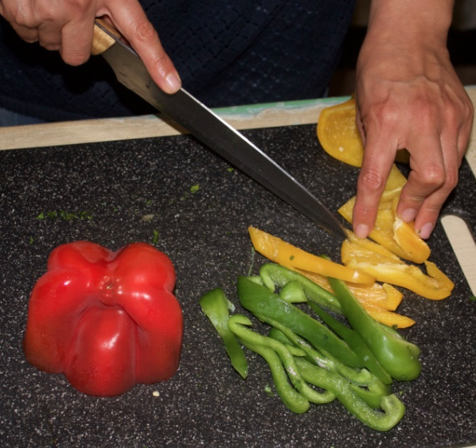
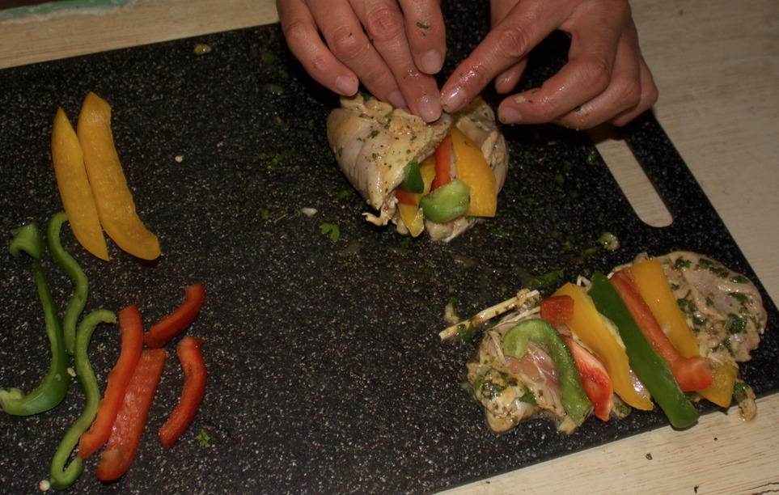
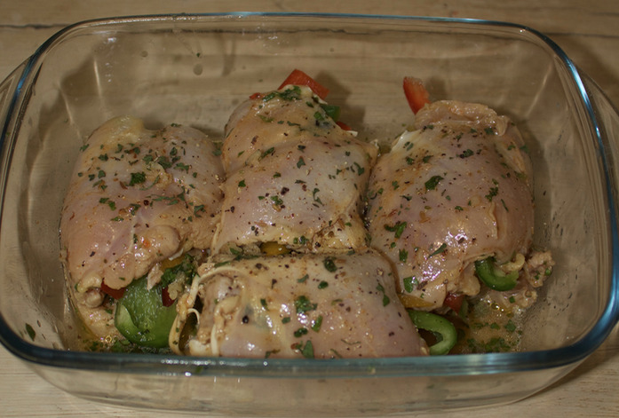
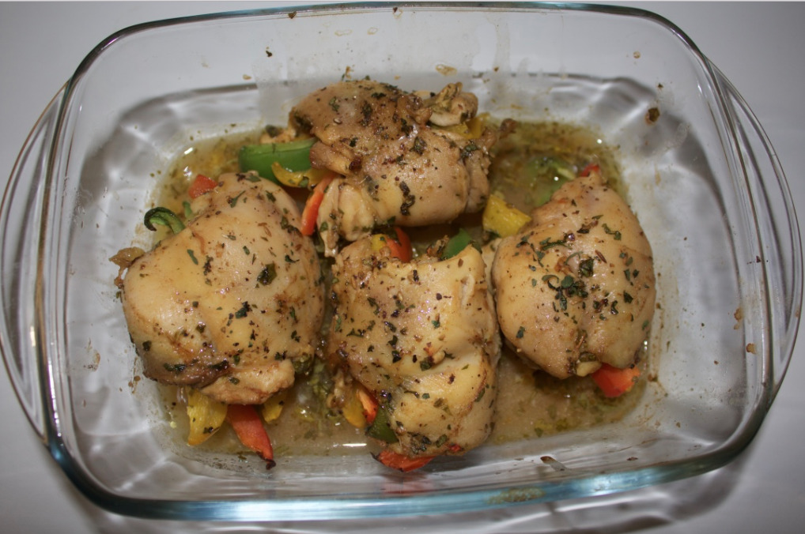

Baked chicken rolls, fajitas version¶
- Serves: 4
- Type: main dish
Description¶
This is a low-carb recipe for mexican food lovers.
Ingredients¶
- Chicken filet: 4
- Lemon: 1
- Fresh cilantra (coriander): 3 tablespoon (after chopping)
- Red pepper: half
- Green pepper: half
- Yellow pepper: half
- Chili powder: half teaspoon
- Cumin: one teaspoon
- Garlic cloves: 3
- Dried oregano: half teaspoon (after chopping)
- Olive oil: 2 tablespoon
- Salt: 1 teaspoon
- Pepper: 1 teaspoon
Ingredients
Steps¶
Chop the cilantra (coriander).
Chop the cilantra
Chop the garlic cloves.
Take a bowl and put in it the cilantra, garlic, lemon juice, salt, pepper, oregano, and olive oil.
Add coriander
Cut the lemon in two halves and squeeze the juice out into the bowl.
Squeeze the lemon
Add the chicken filets (it is assumed they have been cleaned) in the bowl. Let it marinate for at least one hour. Move the chicken every ten minutes to help all sides of the filets to be properly marinated.
Marinate the chicken
Preheat the oven to 175 degrees Celcius (347 degrees Fahrenheit).
Cut the peppers in slices of about 3mm wide.
Cut the peppers
After the chicken has been marinated, take it from the bowl and place the slices peppers on top of the chicken.
Roll the filets and use a toothpick to avoid them from un-rolling.
Roll the chicken filets with the peppers inside
Place the chicken rolls in an oven dish and sprinkle with the remaining marination juice.
Prepare the chicken rolls for the oven
Place the oven dish with the chicken rolls in the oven and let it cook for 25 to 30 minutes, or until the chicken is cooked, at 175 degrees Celcius.
The chicken rolls after cooking in the oven
Can be served with¶
- salad
- avocado slices